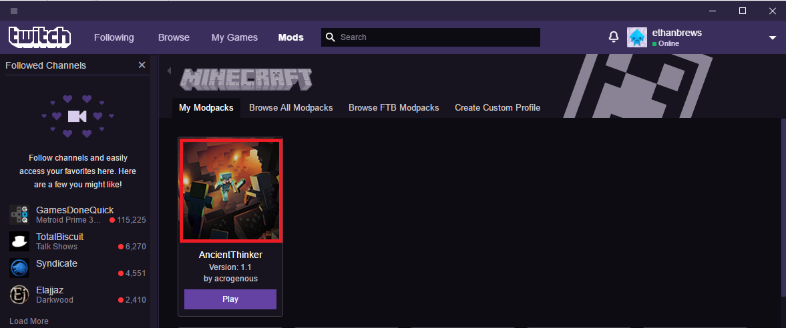

-
downloadStep 1: Downloading the Twitch launcher
Download the twitch launcher from here.
-
downloadStep 2: Downloading the Modpack
Download the modpack from here.
-
downloadStep 3: Adding the pack to Twitch
Click on the 'mods' tab in the twitch launcher.

-
downloadStep 4: Adding the pack to Twitch
Click on the 'Minecraft' button
-
downloadStep 5: Adding the pack to Twitch
Click the 'Create custom profile' tab
-
downloadStep 5: Adding the pack to Twitch
Click 'import' then select the ZIP file downloaded in step 2
-
downloadStep 6 (Optional): Adding more RAM
If you have more RAM avaliable on your machine, you can allocate more of it to minecraft to run the game more smoothly. To do this, click on the modpack icon once it is downloaded.
 -
downloadStep 7 (Optional): Adding more RAM
Click on the '...' icon then on the 'profile options button'.
-
downloadStep 8 (Optional): Adding more RAM
Uncheck 'Use system setting' and drag the slider to the top end of the recommended section (Around 6Gb is recommended for running the modpack with custom textures).
-
downloadJoining the Server
The latest server IP will be available in the announcements channel on discord. Message @xorbyn or @IAmAcro if the server is not available.